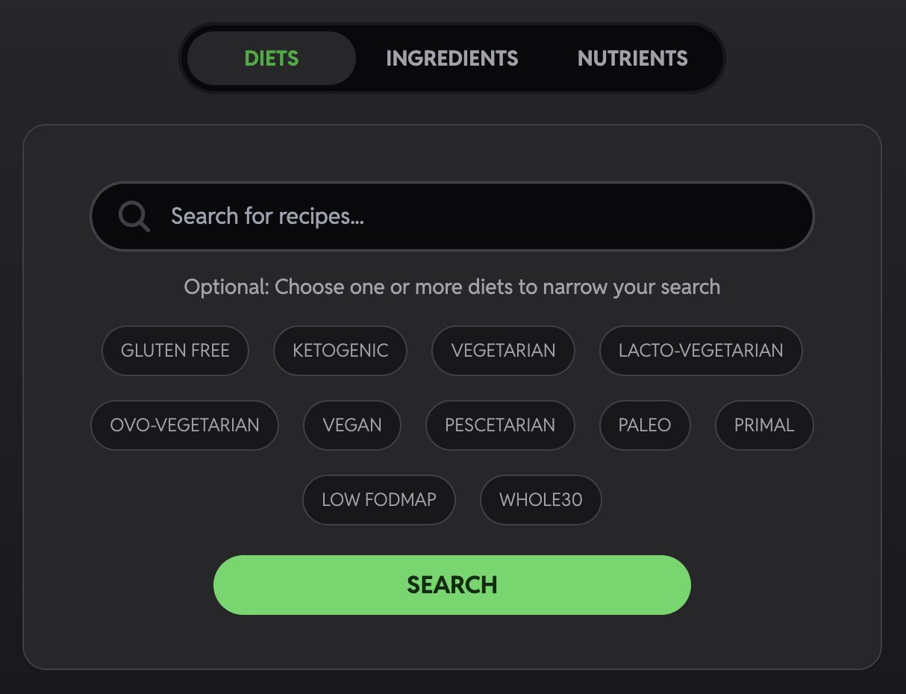
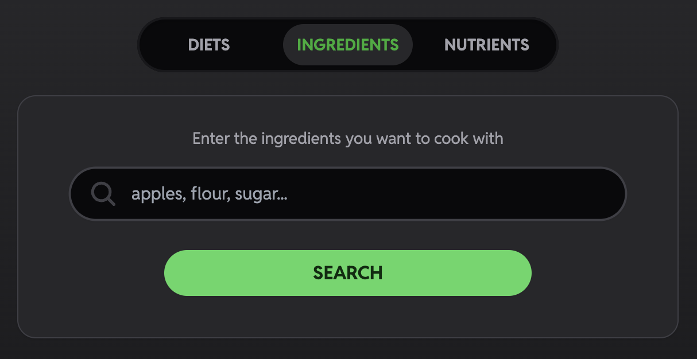
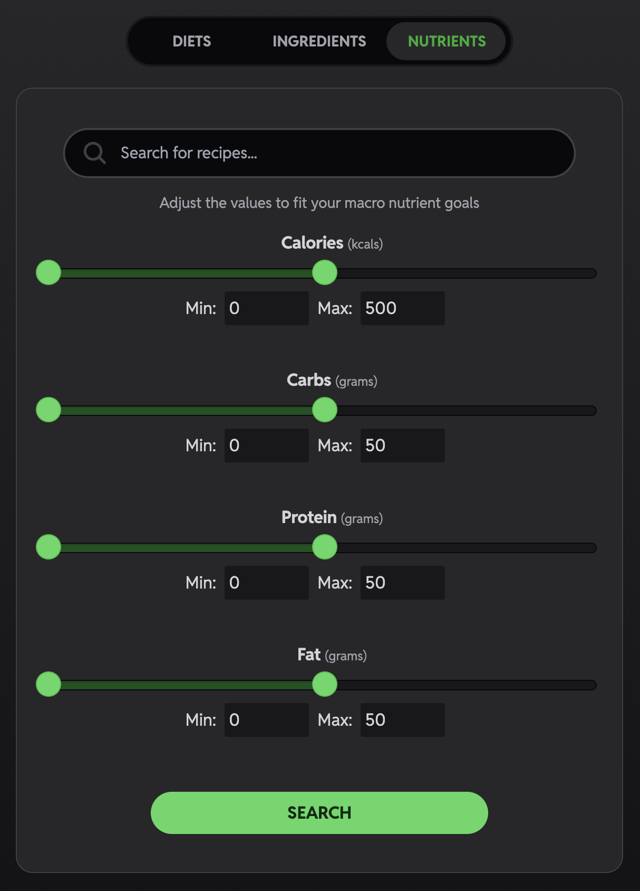

YUMBLE
Yumble is a recipe discovery app that helps you find recipes based on ingredients, macro-nutrients, or dietary preferences powered by the Spoonacular API.
Features
- Dietary Preferences Search: Filter recipes based on dietary restrictions or preferences (i.e., vegan, gluten-free).
- Ingredient Search: Enter ingredients you have, and Yumble will suggest recipes you can make.
- Macronutrients Search: Search within you macronutrient goals (i.e. calories, fat, carbs, protien).
- Save Favorites: Bookmark your favorite recipes for easy access later.
- Detailed Recipe Pages: Get step-by-step instructions, ingredient lists, and nutritional info.
Technology
- Frontend: React, Vite
- Styling: TailwindCSS
- API: Spoonacular API
- Deployment: Netlify


